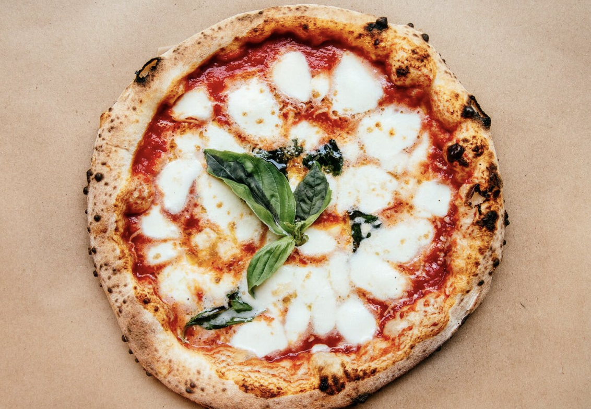

Home
Neapolitan Pizza

Description
The best homemade pizza dough recipe with classic Neapolitan toppings - basil, sauce, and cheese.
Ingredients
For the Whole Wheat Crust
- 350 g White Flour
- 400 g Water
- 2 pinches Yeast
- 150 g Whole Wheat Flour
- 10 g Salt
For the Neapolitan Pizza
- ½ cup Tomato Sauce
- 8 oz Fresh Mozzarella Cheese
- 6 Fresh Basil Leaves
- Olive Oil
- Flaky Salt
- Red Pepper Flakes
Instructions
For the Whole Wheat Crust
- At 8 o'clock in the evening, mix up the poolish. Place 250 grams of the white flour and all of the yeast in a bowl and stir.
- Add 250 grams of water at 80° F. Mix well and cover.
- Let rest overnight.
- At 10 o'clock the next morning, place the remaining 100 grams of white flour, all of the whole wheat flour, and all of the salt in a bowl and stir.
- Pour 150 grams of water at 105° F around the edge of the poolish and then tip everything into your new flour mixture.
- Mix by hand. Cut the dough in pieces with your fingers, and then stretch and fold the dough over itself several times. Repeat until well mixed.
- Let rest for half an hour, and then repeat the stretching and folding process several times, until the dough tightens slightly.
- Let rest for 20 minutes, fold, let rest 20 minutes again, and then fold one last time.
- Around 4 o'clock in the evening, when the dough is about 2½ times its original volume, it is ready to be divided. Carefully tip it out onto a floured surface, and dust with more flour. Using a sharp knife, cut the dough into two equal pieces.
- Stretch and fold one of the dough balls, and then turn it upside down onto a clean surface. Pull the dough toward you several times, using the friction of the sticky dough on the clean counter to tighten it again. Repeat with the other ball.
- Gently place the dough balls on a floured baking pan, leaving room for them to grow. Cover loosely, and let rise at room temperature for an hour, then in the refrigerator for an hour.
For the Neapolitan Pizza
- An hour before you bake the pizzas, begin heating your oven. Place a pizza stone (or two) near the center, and preheat to 550° F. Ten minutes before you assemble the pizza, turn the oven to broil to super-heat the stone.
- Prepare the pizza toppings. You want to make the assembly process as efficient as possible so as to minimize the loss of heat while the stone is out of the oven.
- Turn your dough ball out onto a floured surface, and dust with flour. Punch down the middle of the dough, leaving about an inch around the edge puffed up.
- Turn over and repeat.
- Lift the dough up with both hands, holding it by the rim. Work your hands around the edge, letting the weight of the dough stretch it out.
- Place your fists inside the crust, and use the back of your hands working around the edge to stretch the dough further. Be careful not to stretch it so far that it tears! It's easy to get it too big.
- Using oven mitts, carefully remove the extremely hot stone from the oven. Lift your crust gently, and spread it on the stone.
- Working quickly, spread tomato sauce around the crust. Arrange large pieces of fresh mozzarella thickly on top of the sauce, and strew fresh basil leaves over all.
- Return to the oven.
- Bake for 5 minutes, and then broil for another 2-3 minutes. After 5 minutes, watch it closely. You want the cheese completely melted and the crust golden with a few spots of char.
- Remove from the oven, slice, and serve with olive oil, flaky salt, and flaked red pepper!